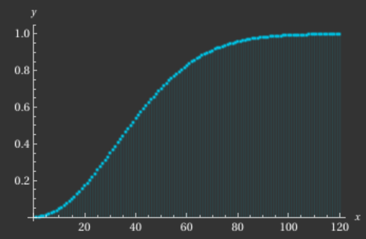
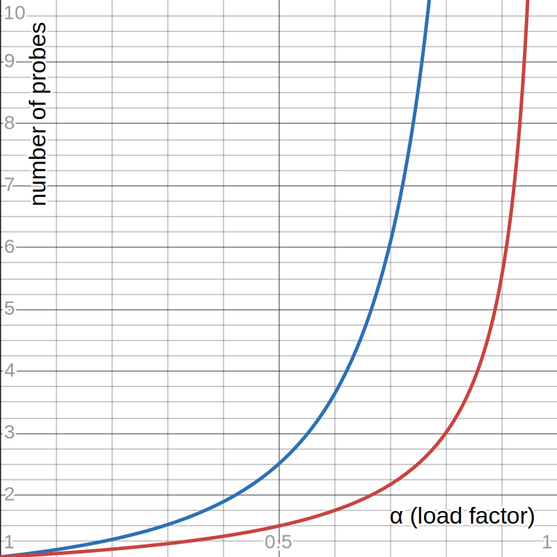

Assume there are 1024 entries in the hash table. Due to the birthday paradox, collision happens more often, counter to our intuition. The graph below visualizes such phenomenon as x is the number of inserted element:
1 - [ M! / ((M - N)! * MN) ] (M: table size, N: number of inserted items)
About only 40 items out of 1024 slots give us half a chance to collide! It seems fair to assert that, collisions will occur. That is, we'd like to pick a good hash function that lets each slot to share same probability of being filled. Too bad, we noramlly have no power over the key of the actual records. Records in real life tend to be poorly distributed. What if we can expect the pattern though? In that case, it seems reasonable to use distribution-dependent hash function. To sum things up, there are 2 situations we face while picking a hash function in general:
We'll delve into the simplest hash functions.
int foo(int x) {
return x % 16;
}
Integers in [0,16) can be represented with 4-bits. That is, the returned value from above function soley depends on the least significant 4-bits of the key. Since those bits are poorly distributed, the result will also be poorly distributed. This denotes that the size of the table size M can have big effect on the performance of the hash system because the table size is typically used as the modulus.
Invented by John von Neumann, described by him in 1949. It squares the key, then extracts the middle r bits. The juicy part is that, most or all bits contribute to the result. For example, assume we have a table size of 100 with given key 1234:
1234
× 1234
-------
4936
3702
2468
1234
-------
1522756
--
22
All digits contribute to the result 22. It isn't dominantly produced by bottom nor top digits of the number.
p(K, i) = ci
c is some constant other than 1. Not all values will make the probing cycle through all entries before returning to the home position. Constant c must be coprime to table size M to generate a linear probing that visits all slots in the table.
p(K, i) = R[i - 1]
R is an array of length M - 1 containing a random integers between [1, M).
p(K, i) = c1i2 + c2i + c3 (K is key, i is an iteration index, and c1,c2,c3 are constants)
Typically, not all slots will be on the probe sequence. A number of disjoint sets might exist in the table. That is, even if the hash table isn't really full, there's a chance of a record not being inserted to the table. Fortunately, there are some combinations of table size M and a function. For example, if M is a power of two and p(K, i) = i2, then every slot in the table will be visited.
If a hash function generates a cluster at a particular home position, then the cluster remains under pseudo-random and quadratic probing. This problem is called secondary clustering. Probing functions so far ignored its input parameter K. To resolve such clustering, we must get our key K involved in the probing process. For example, we can determine a constant c in linear probing by a second hash function with K as a input parameter. Setting c relatively prime to M can be crucial. Let M be a prime number and have our second hash function return a value between [1, M). Or, setting M = 2m and have the function return an odd value between [1, 2m) is another way to go.
Because the possibility of collision increases as the number of inserted item goes up, we define the load factor for the table as, α = N/M (N is the number of records in the table, and M is the size of the table).
It would be great to know the average number of slots probed as α varies. Thankfully, people have done the math for us, and the graph of linear probing follows as:
The blue graph represents insertion which is basically an unsuccessful search, while the red graph corresponds to deletion, or successful search.
For linear probing, performance degrades rapidly once the load factor grows higher than somewhere about 0.5. What we, as implementors can learn from this is that, we might want to design a hash table that never gets half full.
Searching must still pass through the newly emptied slot to reach records further down. Also, we want the emptied slots to be reusable. Thus, we cannot simply mark the slot as empty. This problem can be resolved by putting the tombstone in the slot. Search will continue after it encounters a tombstone to avoid having duplicate keys while it'll stop whenever it reaches empty slot. However, this tend to lengthen the average distance from a record's home position to the record itself.
To resolve such problem, you can either reorganize upon deletion to shorten the path length or periodically reinsert all records and clear all tombstones.